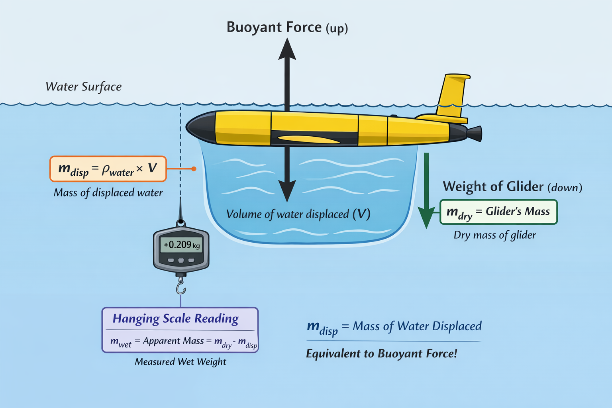

Pre-Deployment
Links
Ballasting

Buoyancy and Ballasting Calculation Example
Measured Quantities
Dry mass of glider (measured on a floor scale, out of the water):
\[ m_{\text{dry}} = 101.4\,\mathrm{kg} \]
Water density during ballast test (measured at the test location):
\[ \rho_{\text{water}} = 1022.9\,\mathrm{kg\,m^{-3}} \]
Hanging scale measurement (apparent weight in water):
(positive means the glider is still heavy in water)
\[ m_{\text{wet}} = +0.209\,\mathrm{kg} \]
Additional mass required to make the glider sink:
\[ m_{\text{added}} = 0.346\,\mathrm{kg} \]
Determining the Displaced Water Mass
When an object is submerged, the buoyant force equals the weight of the displaced water. In mass units, this corresponds to the total mass of water displaced by the glider.
The displaced water mass is calculated as:
\[ m_{\text{disp}} = m_{\text{dry}} + m_{\text{wet}} - m_{\text{added}} \]
\[ m_{\text{disp}} = 101.4 + 0.209 - 0.346 = 101.537\,\mathrm{kg} \]
Calculating Glider Volume
Using the definition of density:
\[ \rho = \frac{m}{V} \Rightarrow V = \frac{m}{\rho} \]
\[ V = \frac{m_{\text{disp}}}{\rho_{\text{water}}} = \frac{101.537}{1022.9} = 0.099264\,\mathrm{m^3} = 99.264\,\mathrm{L} \] This is the physical volume of the glider.
Density of the Glider (Current Configuration)
The effective density of the glider is its dry mass divided by its volume:
\[ \rho_{\text{glider}} = \frac{m_{\text{dry}}}{V} = \frac{101.4}{0.099264} = 1021.52\,\mathrm{kg\,m^{-3}} \]
Since this value is lower than seawater density, the glider is positively buoyant.
Target Density and Required Mass
Target neutral-buoyancy density:
\[ \rho_{\text{target}} = 1022.8\,\mathrm{kg\,m^{-3}} \]
The mass required for neutral buoyancy at this density is:
\[ m_{\text{target}} = \rho_{\text{target}}V = 1022.8 \times 0.099264 = 101.527\,\mathrm{kg} \]
Ballast Adjustment Required
The required ballast change is the difference between the target mass and the current dry mass:
\[ \Delta m = m_{\text{target}} - m_{\text{dry}} = 101.527 - 101.4 = +0.127\,\mathrm{kg} \]
Interpretation:
A positive value means mass must be added. Therefore, 127 g must be added to achieve neutral buoyancy at \(1022.8\,\mathrm{kg\,m^{-3}}\).
Key Takeaways
- Always track units at every step.
- Water density must match the ballast test environment.
- If glider density \(<\rho_{\text{water}}\), the glider floats.
- Small mass changes (\(O(100\,\mathrm{g})\)) significantly affect buoyancy.
Tank Ballasting Procedure
- After applying vacuum to 6 for G2, 7 for G3 +- 0.3 inHg, ballast glider
- Supplies are in yellow ballasting box
- Water pump
- Red winch
- Open ballasting tank, put metal across top
- Hang scales and fishing line
- Connect Freewave wireless data receiver
- Connect Green plug
- CTRL C
- Put c_air_pump 0
- Callback 30
- Lab_mode on
- Use - argos iridium attitude_rev (disable argos iridium and compass)
- Ballast
- Put the glider in the water and add wings, making sure the entire glider, including the antenna, is under water.
- Remove sensor caps (salinity and 02)
- Shake to remove bubbles from glider, particularly from the nose
- Flush the salinity sensor using the aquarium pump
- Raise glider off of scales, zero scales, and put back on fishing line near black part of glider
- Measure weight on front and aft after letting the water in the tank settle down
- Test science instrument, get water temp and salinity
- Report clearall
- Put c_science_all_on 0 (turn on science instruments)
- Put c_science_send_all 1
- Report ++ sci_water_temp (continuously record temp)
- Report ++ sci_water_cond (continuously record salinity)
- Report clearall
- Save ProComm buffer (to use in script when calculating average temp and salinity
- Edit -> scrollback buffer to -> clipboard
- Power down glider
- Exit reset
- CTRL C
- Put c_air_pump 0
- Exit
Compass Calibration
- Gather compass calibration supplies
- Freewave
- Computer with ProComm
- Rope with carabiner
- Ladder
- Freewave
- Hang glider from rope as high as possible
- Connect Freewave to computer and battery power
- Open ProComm, confirm serial cable 1 (port 3) (this is the 2 port blue serial cable)
- Connect Green plug
- CTRL C
- Put c_air_pump 0
- Callback 30
- Lab_mode on
- Use - argos iridium (disable argos and iridium)
- Exit pico (G2) / exit shell (G3) exit to picoDOS)
- Talk att (G2) / talk attitude (G3) (begin reading compass)
- CTRL C
- Close teraterm
- Open Revolution app, using the same port as teraterm
- Wireless
- Close
- Tools -> Calibrate magnetics -> start
- Confirm setting
- 3D
- 3000 samples
- 64 something?
- 3D
- Wireless
- Begin spinning glider in every orientation possible
- X,Y,Z planes in Revolution app will begin to be populated
- If at OOI, do 300 observations flat with the glider upright, then 300 with the nose down, then 300 with the nose up. Flip the glider sideways and complete this process for 900 more observations, then flip the other way and repeat.
- Get 3000 observations
- If more than 3% mag sigma, redo
- Use new (saves file)
- This file is saved directly to the glider
- Write down the change in Mag Total sigma 3 values for future reference.
- X,Y,Z planes in Revolution app will begin to be populated
- Open teraterm, it should automatically connect via the same port
- Enter
- Enter
- If at OOI and doing a compass characterization:
- App -lab (to go back into gliderdos)
- Callback 30
- Put c_iridium_on 0
- Put c_argos_on -1
- Put c_gps_on 0
- Report ++ m_vacuum m_coulomb_current m_heading
- Once m_vacuum is steady and m_coulomb_current is 0.15 amp or less it indicates that the air pump motor is no longer running and the air bladder is full. Then remove those 2 variables from reporting
- Once m_vacuum is steady and m_coulomb_current is 0.15 amp or less it indicates that the air pump motor is no longer running and the air bladder is full. Then remove those 2 variables from reporting
- Report - m_vacuum m_coulomb_current
- Close teraterm
- Start compass program (python program)
- App -lab (to go back into gliderdos)
- After compass characterization
- App -lab
- Report clearall
- Put c_de_oil_vol -1000 (if deep pump)
- Put c_air_pump 0
- exit
- App -lab
- Pull green plug (because we’re in picoDOS, no need to exit)
Battery Charging
- There are two ways to charge lithium batteries depending on what model glider they are in.
- If the glider is a newer G3 with an external charging port:
- Connect the charging cable to the external port at the aft end of the glider
- Turn on the charging block
- The amperage reading should increase initially, up to ~12
- The glider is done charging once the readout is less than 0.5 amps
- The amperage reading should increase initially, up to ~12
- Connect the charging cable to the external port at the aft end of the glider
- If the glider is a G2, the forward and aft batteries will need to be removed to charge (ex SL592)
- Take glider apart to access both the forward and aft batteries
- The charging cable has three direct charging cables corresponding to the aft, extended battery, and forward battery (the cable is identical for the forward and extended battery).
- Use the charging cable adaptor to plug in to the aft battery first, and then use either of the remaining charging cables to plug into the forward battery.
- Turn on the charging block
- The amperage reading should increase initially, up to ~12
- The glider is done charging once the readout is less than 0.5 amps
- The amperage reading should increase initially, up to ~12
- Take glider apart to access both the forward and aft batteries
- When either replacing G2 batteries or after recharging G3 batteries, reset the coulomb counter to 0
- Put m_coulomb_amphr_total 0
- Exit reset
- Get m_coulomb_amphr_total
- Put m_coulomb_amphr_total 0
- You can also check the lithium battery relative charge
- Get m_lithium_battery_relative_charge
- Get m_lithium_battery_relative_charge
- Other relevant battery commands
- m_battery
- m_battery_inst
- m_coulomb_amphr_total
- m_coulomb_current
- M_lithium_battery_relative_charge
- report ++ m_bms_pitch_current m_bms_aft_current m_bms_ebay_current
- get m_bms_emergency_battery_voltage
- m_battery
Talk to Battery
- You can directly query the battery in two ways:
- With the batteries in the glider
- Exit pico (G2) / exit shell (G3) exit to pico/shell DOS
- Talk batt (G2) / battery (G3)
- Exit pico (G2) / exit shell (G3) exit to pico/shell DOS
- With the batteries outside the glider
- Connect the charging / communication cable to the batteries
- Open TeraTerm and connect via available serial port
- You will only see a black screen, even when you type commands
- Type $R,0 $R,1 $R,2 or $R,3 (R,2 is for extended battery)
- Open TeraTerm and connect via available serial port
- The output will look similar to this:
$R,0
Batt #: 0
Status: 0xdc10
LTCO: 0x202
Voltage: 5009 mV
Current: 0 mA
Temperature: 296.101562K
Serial: 1425
Remaining Capacity: 0 mAh
Full Charge Capacity: 9915 mAh
Time to full charge: -1 min
Cycle Count: 3
Thermistor (raw) 32320
Thermistor (V) 2.465880
Manufacturer Name: INSPIREDE
Device Name: NL2054HD34
Device Chemistry: LION
- The important part is that the full charge capacity on the rechargeable batteries is over 9000 mAh. There will always be a ‘dummy’ battery in $R,0 that will say something like this (and this is normal):
Remaining Capacity: -1 mAh
Full Charge Capacity: -1 mAh
- It is common to have to query a battery multiple times to get a ‘full’ reading, meaning that some of the Batt # will not communicate properly if only querying the battery 1 time.
- Connect the charging / communication cable to the batteries
- Ctrl -c
- App -lab (to go back into gliderdos)
- With the batteries in the glider